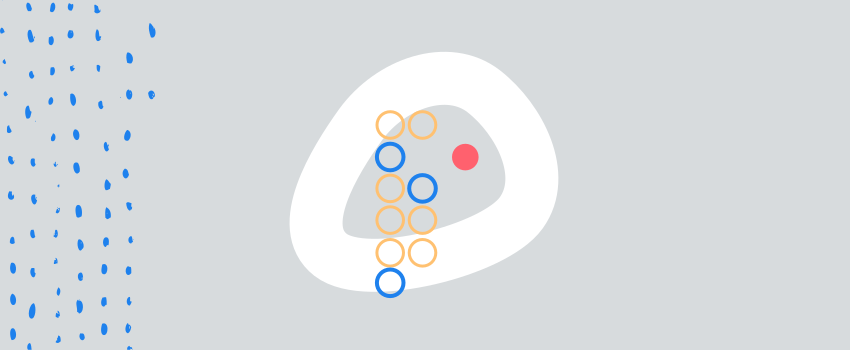

Can solitude stimulate creativity? 3/10/2017
In a time like ours, where social networks seems to be an essential part of modern living, the willingness to be alone can be considered as a strange behavior!
Groups dynamic can me stimulating in a collaborative work context : it can help to unite teams. But can that way of organizing work be a good way to create a creative dynamic ? It seems to be the opposite according to recent research. According to an extract of a research published by the New York Times, all these procedures could damage creativity. In fact, during group meetings, introverted creative people might keep their ideas for them, too afraid to express them. That creates a group dynamic with leaders that have followers from one side and passive people, on the other side. This pattern oversteps the creativity dynamic.
Being able to look and find solitude when required has a crucial importance for the development of creativity. The requests of others and distractions are constant, and concentration is very fragile. It is important for the creator to have a private place and to be convinced that he is acting freely.
That isolation is therefore necessary for almost every step of the creativity, but it entails a particular importance during the most dynamic moments of the creative action (the ideation and its execution).
In his letters with Faydeau, Flaubert remarked that solitude was necessary for him in order to get to work, loneliness having on him the effect of an excitant:
“You would like to know that I have been completely alone for eight days now. I work without interruption, until 4 a.m. every night. I can see that it is starting to work; I mean that I am starting to have fun ! I sing alone outload around the different rooms of my house, until I can no longer stand my own voice”.
Solitude is necessary if you want to have a prolific creative activity. Being isolated when one finds it necessary is a luxury. We make reference here to the execution of the creative idea, the way on which it materializes. Social interactions, particularly belonging to a community where creativity is appreciated makes part of the stimulant factors of the creative impetus Humans are social animals, they need to interact with other counterparts. This is also crucial for creativity as well as for the well-being. Solitude is something that has to be chosen, and the artist must organize his activities in order to be able to enjoy it when he needs it.
Discover mēkā
meka is a chat bot using artificial intelligence to help train and develop your creativity.
test my creativity